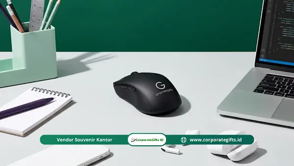

Corporate Gifts ID - Fungsi corporate gift Q2 adalah meningkatkan loyalitas dan keterlibatan karyawan, meredakan kelelahan mental (burnout), mempercepat negosiasi B2B bernilai tinggi, serta menegaskan nilai etika merek melalui hadiah yang relevan dan personal pada periode April hingga Juni. Apresiasi yang terencana membuat perhatian manajemen terasa nyata, bukan sekadar seremonial formalitas.
Memasuki kuartal kedua, banyak perusahaan mulai menyusun perencanaan corporate gift Q2 agar alokasi anggaran terarah dan dampaknya terukur. Di tengah persaingan bisnis modern, mempertahankan pelanggan prioritas dan talenta terbaik menuntut sentuhan personal ekstra, dan prinsip tersebut menjadi pilar utama di dunia korporat.
Poin Kunci Corporate Gift Q2:
- Keterlibatan Karyawan: Apresiasi bermakna memperkuat rasa memiliki tim hingga 28% dan memicu produktivitas harian.
- Dukungan Kesehatan Mental: Hadiah relaksasi di bulan Mei (Mental Health Month) menurunkan tingkat kejenuhan kerja pasca evaluasi kuartal.
- Akselerasi Deal B2B: Kado personal berbasis data menjadi pemecah kebekuan dalam mengunci kontrak kerja sama bernilai tinggi.
- Pilar Etika & ESG: Suvenir ramah lingkungan di momentum Hari Bumi (22 April) mengomunikasikan integritas perusahaan secara transparan.
Apa Saja Fungsi Utama Corporate Gift Q2?
Secara umum, terdapat empat fungsi fundamental corporate gift pada kuartal kedua: meningkatkan keterlibatan karyawan, mengatasi kelelahan mental, mengakselerasi penjualan dan negosiasi B2B, serta menegaskan komitmen etika dan keberlanjutan merek.
- Keterlibatan Karyawan: Apresiasi bermakna memperkuat rasa memiliki dan motivasi harian tim.
- Kesehatan Mental: Hadiah relaksasi membantu menurunkan kepenatan dan memulihkan energi kerja.
- Akselerasi Penjualan: Kado personal menjadi pemecah kebekuan dalam negosiasi kontrak bernilai tinggi.
- Nilai Etika Merek: Suvenir ramah lingkungan mengomunikasikan komitmen perusahaan pada kelestarian alam secara autentik.
Bagaimana Corporate Gift Q2 Meningkatkan Keterlibatan Karyawan?
Corporate gift meningkatkan keterlibatan karyawan dengan memperkuat rasa memiliki dan motivasi melalui apresiasi yang konsisten. Riset industri SDM menunjukkan bahwa karyawan yang merasa dihargai cenderung lebih engaged dan menghasilkan output kerja berkualitas tinggi:
- Rasa Memiliki Meningkat: Survei industri melaporkan penghargaan bernilai nyata mendorong rasa memiliki sekitar 28% dan keterlibatan tim sekitar 21%.
- Performa Lebih Tinggi: Karyawan yang dihargai dilaporkan berkinerja sekitar 15 hingga 20% lebih baik karena merasa aman secara psikologis untuk berkreasi.
- Validasi Personal: Sekitar 77% penerima suvenir merasa diakui secara personal oleh manajemen, sehingga ikatan loyalitas internal semakin kokoh.
Langkah Membangun Program Apresiasi Karyawan Berkelanjutan
Agar program apresiasi tidak berhenti sebagai seremoni sesaat, tim manajemen dapat menerapkan prinsip keberlanjutan berikut:
- Visi Jangka Panjang: Jadikan apresiasi sebagai budaya kerja permanen. Perayaan satu hari saja tidak cukup untuk menjaga retensi talenta unggulan.
- Evaluasi Berkala: Tim SDM dapat menjalankan survei kepuasan singkat setelah bingkisan diterima untuk mengukur efektivitas program.
- Jadwal Distribusi Strategis: Atur jadwal pemberian agar tidak terkesan repetitif dan pengeluaran tetap sejalan dengan peningkatan kebahagiaan karyawan.
- Pemetaan Penerima Tepat Sasaran: Pastikan target sasaran penerima hadiah dipetakan cermat agar seluruh anggota, termasuk pekerja remote, merasa terhubung erat dengan perusahaan.

Kurasi suvenir relaksasi kesehatan mental dan perangkat teknologi untuk apresiasi kuartal kedua.
Mengapa Corporate Gift Q2 Penting untuk Mengatasi Burnout Karyawan?
Kuartal kedua sering kali menjadi fase intens pasca penutupan target Q1. Corporate gift relaksasi dan perawatan diri sangat penting untuk meredakan tingkat burnout serta memperkuat ketahanan emosional karyawan menghadapi tekanan target baru. Bulan Mei, yang bertepatan dengan Mental Health Awareness Month, menjadi momentum paling tepat:
- Mengurangi Burnout: Perhatian pada kesejahteraan mental membantu mencegah kelelahan ekstrem dan membangun ketahanan emosional kerja.
- Pemulihan Alami: Diffuser aromaterapi, minyak esensial, atau matras akupresur membantu karyawan menikmati jeda istirahat berkualitas di rumah.
- Dukungan Perawatan Diri: Buku jurnal kesehatan atau voucher wellness menegaskan bahwa kesehatan mental staf adalah prioritas perusahaan.
Panduan Memilih Suvenir Kesehatan dan Relaksasi yang Tepat
Dalam memilih suvenir kesehatan, perusahaan perlu memperhatikan aspek kualitas dan nilai guna:
- Kurasi Produk Bermutu: Pilih produk yang teruji, aman, dan ergonomis agar perhatian perusahaan terhadap kenyamanan staf terasa tulus.
- Kolaborasi Vendor Terpercaya: Bekerja sama dengan penyedia berpengalaman untuk merakit paket hadiah relaksasi menambah kebanggaan penerima karena hasil rapi dan higienis.
- Sentuhan Pesan Personal: Kartu ucapan tulisan tangan dari jajaran pimpinan divisi melipatgandakan kedekatan emosional dan makna dari hadiah tersebut.
Bagaimana Corporate Gift Q2 Mempercepat Penjualan dan Negosiasi B2B?
Dalam hubungan antar-korporat (B2B), corporate gift berperan sebagai ice-breaker elegan yang membuat klien prioritas lebih terbuka untuk memulai kolaborasi. Riset industri mencatat sekitar 70% klien merasa lebih terdorong memulai kerja sama setelah menerima kado yang relevan dan bernilai personal:
- Pemecah Kebekuan Alami: Kado terencana memuluskan jalan menuju kesepakatan kontrak secara natural tanpa kesan memaksakan penjualan.
- Bukti Komitmen Kemitraan VIP: Perangkat teknologi atau gift set eksklusif berisi materi profil kerja sama siap pakai memperkuat citra profesional brand.
- Ikatan Emosional Kemitraan: Personalisasi berbasis preferensi klien menciptakan hubungan saling percaya yang berujung pada loyalitas jangka panjang.
Eksekusi Hadiah Cermat untuk Pengambil Keputusan (VIP)
Mengeksekusi corporate gift untuk pengambil keputusan (C-level & direksi) menuntut standar ketelitian tinggi:
- Riset Preferensi Klien: Hindari barang pajangan generik. Pelajari minat profesional atau kebiasaan kerja klien sebelum menentukan produk.
- Alokasi Anggaran Proporsional: Susun alokasi budget corporate gift Q2 yang seimbang agar kualitas produk mencerminkan reputasi brand Anda.
- Kemasan Eksklusif: Detail kecil seperti hardbox magnetik, pita satin bertekstur, dan grafir logo presisi membentuk kesan pertama yang prestisius.
Penegasan Nilai Etika dan Keberlanjutan Merek Lewat Hadiah Q2
Corporate gift kuartal kedua juga menjadi sarana menegaskan nilai etika merek lewat suvenir ramah lingkungan yang menunjukkan aksi nyata pada kelestarian alam. Klien dan karyawan sangat menghargai komitmen hijau tersebut, terlebih saat menyambut peringatan Hari Bumi pada 22 April:
- Standar Etika Bisnis Modern: Praktik ramah lingkungan (ESG) kini menjadi ekspektasi dasar. Suvenir berbahan daur ulang membuktikan komitmen korporat.
- Narasi Merek Transparan: Barang fungsional tahan lama mengubah suvenir biasa menjadi topik diskusi bermakna mengenai kepedulian lingkungan.
- Dampak Pengurangan Sampah Nyata: Penggunaan tumbler berbahan stainless steel berkualitas tinggi secara aktif mengurangi sampah plastik sekali pakai setiap hari.
- Seleksi Rantai Pasok: Pastikan material suvenir diproduksi dengan jejak karbon minimal dan bebas dari klaim palsu (greenwashing).
Ringkasan Matriks Fungsi Corporate Gift Q2
Tabel berikut merangkum empat fungsi utama, sasaran penerima, rekomendasi produk, dan dampak strategisnya bagi perusahaan:
| Fungsi Strategis | Sasaran & Momentum | Rekomendasi Produk | Dampak Bisnis (ROI) |
|---|---|---|---|
| Keterlibatan Karyawan | Tim internal pasca evaluasi Q1 | Tech accessories, polo shirt bordir, tumbler vacuum | Rasa memiliki naik 28%, performa kerja naik 15-20% |
| Kesehatan Mental | Mental Health Month (Mei) | Aromatherapy diffuser, self-care journal, herbal tea kit | Menurunkan risiko burnout, menjaga ketahanan mental tim |
| Akselerasi Deal B2B | Klien VIP & prospek strategis | Leather desk set, wireless power bank, pen set grafir | Mempercepat negosiasi kontrak bernilai tinggi (70% deal boost) |
| Pilar Etika & ESG | Hari Bumi (22 April) & Mitra | Drinkware stainless steel, notebook daur ulang, plantable card | Memperkuat reputasi merek ramah lingkungan & bebas greenwashing |
Kesimpulan & Rekomendasi Langkah Eksekusi
Fungsi corporate gift Q2 mencakup empat ranah krusial: memperkuat loyalitas pekerja, memulihkan energi mental dari burnout, mengakselerasi negosiasi bisnis B2B, dan menegaskan reputasi etika korporat. Kuncinya terletak pada pengiriman yang tepat waktu, relevansi produk tinggi, dan sentuhan personalisasi yang elegan.
Perusahaan tidak perlu menunggu momen tutup tahun untuk menunjukkan apresiasi. Mulailah merencanakan pengadaan paket corporate gift kuartal kedua bersama vendor tepercaya untuk mendongkrak performa tim dan memuluskan target bisnis semester pertama Anda.